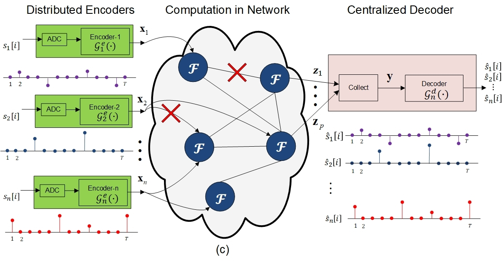

Structured Knowledge Meets Entropy
We are developing an information theory for systems that need the meaning of data—not necessarily every detail of the data itself.
Why this matters
Sensors, devices, and databases can produce far more data than a network can afford to transmit, store, or process. Yet the purpose of collecting a signal is usually not to reproduce it perfectly. A system may need only enough information to decide whether a vehicle should stop, whether two observations refer to the same event, or whether a safety rule has been violated. Those questions are defined by an ontology: the concepts, relationships, and rules that give the data operational meaning.
Conventional compression treats faithful reconstruction of the source as the objective. SOLIR asks a different question: what is the smallest representation that still supports the reasoning task? By letting the ontology determine which distinctions matter, a system can avoid spending bandwidth and energy on details that do not affect the decision.
The general problem
Thrust 1 extends this idea across centralized, distributed, and networked settings. With one source, the challenge is to acquire only the features needed by the task. With several sources, the system should also exploit correlations among observations. Across a network, it must decide how task-relevant information should be represented and moved when links, energy, and time are limited.
The work brings two information-theoretic tools into an ontological setting. Ontological quantization determines what should be measured and which bits are most important for the governing rules. Ontological compression seeks the minimum communication needed to compute the desired function rather than reconstruct all source data. The representation must also remain useful when the ontology changes, when one signal supports several tasks, or when the source distribution is not known exactly.
What we aim to establish
- Fundamental tradeoffs between representation cost and task accuracy.
- Practical, low-delay codes that preserve the most consequential semantic distinctions.
- Representations robust to changing rules, uncertain tasks, and mismatched data distributions.
- A foundation that Thrusts 2 and 3 can use for adaptive ontologies and efficient networked learning.
